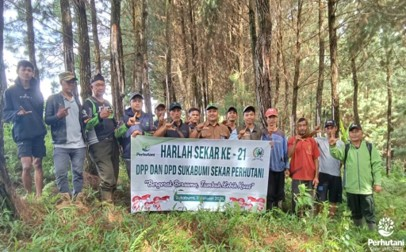

SUKABUMI, PERHUTANI (12/01/2026) | Perum Perhutani Kesatuan Pemangkuan Hutan (KPH) Tasikmalaya mengapresiasi kegiatan penanaman bersama yang dilaksanakan oleh Serikat Karyawan Perhutani (Sekar) dalam rangka memperingati Hari Lahir (Harlah) ke-21 Sekar Perhutani. Kegiatan tersebut dilaksanakan di wilayah Bagian Kesatuan Pemangkuan Hutan (BKPH) Bojonglopang, Desa Bojonglopang, Kabupaten Sukabumi, pada Selasa (12/01/2026).
Kegiatan ini diikuti oleh pengurus Sekar, karyawan Perhutani, mandor sadap, dan mitra sadap, serta dilaksanakan di lokasi sadapan sebagai bentuk kebersamaan dan apresiasi terhadap peran pelaku lapangan dalam menjaga kelestarian hutan dan mendukung keberlangsungan produksi getah pinus.
Tofik Hidayat Administratur Perhutani KPH Sukabumi menyampaikan “Apresiasi setinggi-tingginya atas terlaksananya kegiatan Penanaman Bersama dalam rangka memperingati Hari Lahir (Harlah) ke-21 Sekar Perhutani Kegiatan yang berlangsung di Desa Bojonglopang ini merupakan bukti nyata komitmen bersama antara Perhutani, Sekar Perhutani, dan masyarakat mitra dalam menjaga kelestarian hutan.” pungkasnya.
Ketua Sekar DPD Sukabumi Ade Ridwan, menyampaikan bahwa pelaksanaan peringatan Harlah Sekar Perhutani di lokasi sadapan merupakan bentuk penghargaan kepada para mandor sadap dan mitra sadap yang disebutnya sebagai “pejuang terdepan Perhutani”. Menurutnya, para penyadap memiliki peran penting karena setiap hari berinteraksi langsung dengan sumber kehidupan perusahaan, yaitu getah pinus.
Perayaan Hari lahir Sekar dilaksanakan pada lokasi sadapan bersama para mandor sadap dan mitra sadap, lokasi perayaan lapangan dipusatkan di Wilayah BKPH Bojonglopang. Di tengah hamparan hutan pinus, suasana akrab dan penuh semangat tercipta antara pengurus Sekar, karyawan, dan para mitra sadap.
Pernyataan tersebut mendapat sambutan hangat dari Ade Ridwan. Dalam sambutannya, ia menegaskan bahwa keberhasilan Perhutani tidak lepas dari sinergi yang kuat antara semua elemen, mulai dari level manajemen hingga ujung tombak di lapangan. “Perayaan hari ini adalah bentuk penghargaan kami. Tidak ada hierarki di sini, yang ada adalah rekan seperjuangan. Semangat Bapak dan Ibu mitra sadap adalah penggerak utama kami,” ujar Ade Ridwan.
Perayaan sederhana di tengah hutan ini diakhiri dengan melakukan pembagian bibit pohon buah-buahan dan jenis pinus pada warga sekitar, sekaligus melakukan penanaman sebagai wujud kepedulian dan kecintaan terhadap hutan agar dapat dimanfaatkan secara bijak tanpa merusaknya.
Editor: WK
Copyright © 2026 Warta Nusantara Barat